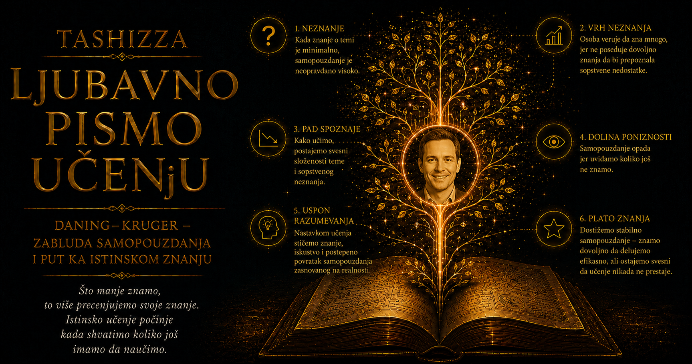

Ljubavno pismo učenju

Ponekad jedna naučna ideja toliko snažno podseti ljude na njihovo svakodnevno iskustvo da napusti laboratoriju, uđe u opšti jezik i počne da živi životom jednostavnijim od istraživanja iz kojeg je nastala. To se dogodilo sa radom koji je Džastin Kruger krajem dvadesetog veka objavio sa Dejvidom Daningom. Njihova prezimena spojila su se u izraz kojim se danas opisuju samouvereni početnici, loši rukovodioci, površni komentatori i protivnici u raspravi, dok je iza poznatog naziva ostao manje poznat naučnik čiji se rad prostire mnogo dalje od jedne čuvene studije.
Krugerova istraživanja povezuje duboko interesovanje za ograničenja sopstvene perspektive. Čovek zna šta je želeo da kaže, pa očekuje da će njegovu nameru čuti i sagovornik; oseća koliko mu je neprijatna mrlja na odeći, pa pretpostavlja da je svi primećuju; poznaje razloge sopstvene odluke, zbog čega mu je teško da zamisli kako ona izgleda osobi koja te razloge ne zna. Isto se događa kada procenjuje svoj učinak: iznutra oseća tok misli, lakoću odgovora i zadovoljstvo pronađenim rešenjem, a taj neposredni doživljaj lako zamenjuje neutralnim dokazom da je zaista bio uspešan.
Rođen u Kaliforniji, Kruger je 1993. godine završio studije psihologije na Univerzitetu Santa Klara, a doktorat stekao 1999. na Kornelu. Njegov mentor bio je Tomas Gilovič, poznat po istraživanjima svakodnevnog prosuđivanja, naknadne pameti, uočavanja obrazaca i načina na koji ljudi tumače sopstveno iskustvo. U tom okruženju Kruger je razvijao sposobnost da iz male životne neprijatnosti izvede precizno naučno pitanje. Neuspela šala, dvosmislena poruka, neobična majica ili procena sopstvene veštine mogli su postati ogledalo opštih zakonitosti ljudske pažnje.
Njegov doktorski rad bavio se egocentrizmom u procenjivanju sebe i drugih. U psihologiji taj pojam ne mora označavati sebičnost ili moralnu bezobzirnost, već prirodnu činjenicu da nam je sopstveno iskustvo dostupnije od tuđeg. Mi svoje misli osećamo neposredno, dok tuđe moramo da zamišljamo; poznajemo kontekst sopstvene rečenice, dok primalac dobija samo ono što je zaista izgovoreno ili napisano. Greška nastaje kada nedovoljno korigujemo početni pogled i pretpostavimo da drugi vide, znaju i osećaju približno ono što je prisutno u našoj svesti.
Na Kornelu je Kruger sarađivao sa Dejvidom Daningom, tada već iskusnim profesorom koji se bavio samoprocjenom i granicama samouvida. Povod koji će ući u istoriju njihovog rada bila je vest o Mekarturu Vileru, čoveku koji je 1995. opljačkao dve banke bez maske, verujući da će limunov sok sakriti njegovo lice pred sigurnosnim kamerama. Iza bizarnosti događaja nalazilo se ozbiljno pitanje: može li nedostatak znanja čoveku oduzeti i sposobnost da razume koliko je njegova zamisao neodrživa?
Krugerov istraživački dar ogledao se u pretvaranju takvog pitanja u merljiv eksperiment. Utisak da neko govori o oblasti koju ne poznaje nije dovoljan za naučni zaključak; potrebno je definisati zadatak, izmeriti učinak, zabeležiti samoprocenu i uporediti subjektivnu sigurnost sa rezultatom. U radu objavljenom 1999. godine učesnici su procenjivali humor i rešavali zadatke iz gramatike i logičkog rasuđivanja, posle čega su pokušavali da odrede sopstvenu uspešnost i položaj u odnosu na druge.
Najslabiji učesnici znatno su precenjivali svoj položaj, dok su najuspešniji ponekad potcenjivali koliko su njihovi rezultati bolji od tuđih. Kruger i Daning objasnili su taj obrazac vezom između veštine i metakognicije. Znanje koje omogućava tačan odgovor često je potrebno i za prepoznavanje pogrešnog odgovora, pa nedovoljno stručna osoba može iskreno verovati da je njen postupak razuman. Iluzija sposobnosti stoga ne mora imati oblik razmetljivosti; ona može izgledati kao tiho i mirno osećanje da smo nešto uradili sasvim pristojno.
Posebnu vrednost rada dao je nalaz da učenje može poboljšati samouvid. Kada su slabiji učesnici stekli dodatno znanje, dobili su merila pomoću kojih su jasnije procenjivali i kvalitet sopstvenih ranijih odgovora. Taj rezultat čuva istraživanje od surovosti koju su mu kasnije nametnule internetske šale. Čovek nije osuđen da zauvek ostane u slepoj tački; znanje može istovremeno izgraditi sposobnost i osvetliti granicu do koje ona dopire.
Rad pod naslovom „Nestručni i nesvesni toga” pojavio se upravo u vreme kada je Kruger završavao doktorat, pa je njegova najpoznatija ideja nastala na samom početku samostalne karijere. Godinu dana kasnije Kruger i Daning dobili su Ig Nobelovu nagradu, priznanje namenjeno istraživanjima koja najpre izazivaju osmeh, a zatim podstiču ozbiljno razmišljanje. Rana slava mogla ga je zauvek vezati za jednu temu, ali je Kruger nastavio da istražuje širi problem: kako blizina sopstvenog iskustva menja procenu sveta.
Posle doktorata radio je na Univerzitetu Ilinois u Urbani i Šampejnu, gde je razvijao istraživanja prosuđivanja i donošenja odluka. Tehnološke promene pružile su mu novu laboratoriju. Elektronska pošta sve češće je prenosila humor, ironiju, ljutnju i nežnost bez tona glasa, izraza lica i neposredne reakcije sagovornika. Takva komunikacija savršeno je odgovarala njegovom pitanju: koliko dobro pisac može da napusti sopstvenu perspektivu i pročita poruku očima osobe koja ne zna njegovu nameru?
U istraživanju elektronske komunikacije koje je sproveo sa saradnicima, učesnici su pisali poruke zamišljene kao iskrene ili sarkastične, a zatim procenjivali koliko će ih primaoci pravilno razumeti. Pošiljaoci su bili previše sigurni. Dok su pisali, u sebi su čuli intonaciju koju su želeli da prenesu, pa im je značenje izgledalo jasno utisnuto u reči. Primalac je video samo tekst, bez unutrašnjeg glasa njegovog autora. Razlika između nameravanog i dostupnog objašnjava zbog čega kratka poruka može proizvesti dug nesporazum.
Ovaj nalaz ima i etičku težinu. Dobra namera ne putuje automatski sa rečenicom, pa odgovornost za komunikaciju ne prestaje činjenicom da smo znali šta želimo da kažemo. Potrebno je razmisliti o tome šta druga osoba zna, koje značenje može dati tonu, kakvo iskustvo unosi u razgovor i šta joj je ostalo nevidljivo. Krugerov rad nas podseća da se jasnoća ne meri sigurnošću pošiljaoca, već mogućnošću primaoca da poruku razume bez pristupa njenoj neizgovorenoj pozadini.
Druga poznata linija njegovih istraživanja bavila se efektom reflektora, čovekovom sklonošću da precenjuje koliko drugi primećuju njegov izgled, postupke i neprijatnosti. U jednom čuvenom eksperimentalnom postupku učesnik je ulazio među druge ljude noseći upadljivu majicu i kasnije procenjivao koliko ju je prisutnih zapazilo. Procene su bile veće od stvarnog broja posmatrača koji su je zapamtili. Osoba je svoju nelagodnost osećala snažno, pa joj se činilo da mora biti jednako vidljiva i svima oko nje.
Efekat reflektora pruža utešnu protivtežu Krugerovim istraživanjima pogrešne sigurnosti. Ljudi nas obično posmatraju manje nego što strahujemo, jer svako najveći deo pažnje provodi u središtu sopstvenog iskustva. Pogrešna reč, nespretan korak ili detalj na odeći mogu nama obojiti čitavo veče, dok su za druge bili prolazan događaj među brojnim brigama koje su već nosili. Razumevanje te neravnoteže može ublažiti stid i osloboditi čoveka od osećanja da se svaka njegova nesavršenost nalazi pod trajnim pogledom publike.
Kruger je proučavao i način na koji ljudi procenjuju svoj položaj u odnosu na druge. Ako je neki zadatak nama lak, skloni smo da zaključimo da smo verovatno iznad proseka, nedovoljno uzimajući u obzir mogućnost da je lak i ostalima. Kada je zadatak veoma težak, može se pojaviti suprotna greška: sopstvenu muku tumačimo kao dokaz slabosti, iako se čitava grupa suočava sa istim problemom. Pristrasnost stoga ne vodi uvek prema precenjivanju, jer njen smer zavisi od informacije kojoj posvećujemo pažnju i od toga koliko ozbiljno razmatramo iskustvo ljudi sa kojima se poredimo.
Njegova istraživanja optimizma, pesimizma i predviđanja zadovoljstva nastavila su istu misaonu nit. Ljudi često zamišljaju buduće iskustvo kao produžetak sadašnjeg osećanja, potcenjujući prilagođavanje, zasićenje i promenu želja. U studijama svakodnevne potrošnje Kruger i njegovi saradnici pokazivali su da tempo konzumiranja može promeniti uživanje, jer pauze usporavaju navikavanje na prijatno iskustvo. Iza naizgled male teme nalazilo se poznato pitanje: koliko pouzdano sadašnji um može da zamisli budućeg sebe?
Godine 2005. Kruger je prešao na Sternovu poslovnu školu Univerziteta Njujork, gde su njegova istraživanja dobila neposrednu vezu sa odlukama rukovodilaca, pregovarača, marketinških stručnjaka i potrošača. Poslovni svet obiluje procenama sopstvene kompetentnosti, tuđih reakcija i budućih ishoda, dok kultura odlučnog nastupa često nagrađuje sigurnost pre nego što proveri njeno pokriće. Krugerova psihologija pokazuje zbog čega dobar donosilac odluke mora beležiti pretpostavke, porediti predviđanja sa rezultatima i tražiti pogled ljudi koji ne dele njegove početne interese.
Kao nastavnik prosuđivanja, Kruger se suočavao sa posebnom teškoćom: učenik koji nauči nazive kognitivnih pristrasnosti lako počinje da ih prepoznaje samo kod drugih. Učenje tada stvara novi rečnik za osuđivanje, dok sopstveni način mišljenja ostaje netaknut. Njegovi eksperimenti nude plodniji put, jer učesniku dopuštaju da najpre donese procenu, zatim je uporedi sa stvarnim ishodom i tek potom dobije pojam kojim može razumeti razliku. Čovek tako ne sluša predavanje o tuđoj pogrešivosti, već susreće granicu sopstvenog pogleda.
Javna popularnost Daning–Krugerovog efekta često je prikrivala upravo tu blagost izvornog istraživanja. Pojam je postao otmenija zamena za uvredu, dok poznata internetska kriva sa „vrhom gluposti” i „dolinom očaja” nije pripadala Krugerovom i Daningovom radu. Njihova studija nije tvrdila da svaki početnik sebe smatra genijem, niti da su neki ljudi trajno smešteni među sposobne, a drugi među nesposobne. Govorila je o procenjivanju učinka u konkretnoj oblasti i o teškoći da grešku primetimo bez znanja koje nam je potrebno da je razumemo.
Kasnija istraživanja preispitivala su statističku osnovu efekta, način grupisanja rezultata, regresiju ka proseku i razliku između apsolutne i relativne samoprocene. Takve kritike nisu predstavljale neprijateljstvo prema slavnoj ideji, već nastavak procesa koji sama ideja preporučuje: poređenje sigurnosti sa dokazima. Kruger je ostao istraživač uslova pod kojima samoprocena postaje tačnija ili slabija, umesto čuvara pojednostavljene formule koja bi morala ostati nepromenjena zato što je postala popularna.
Godine 2023. Kruger i Daning dobili su Grawemeyerovu nagradu za psihologiju za ideju koja je snažno uticala na naučno i javno razumevanje kompetentnosti. Za Krugera je priznanje zatvorilo neobičan krug: istraživanje nastalo tokom doktorskih godina prvo je postalo deo opšte kulture, zatim prošlo kroz talase pojednostavljivanja i kritike, a više od dve decenije kasnije dobilo veliko akademsko priznanje. Njegov kasniji rad pokazuje da prava naučna zrelost počinje posle slavnog nalaza, u spremnosti da se njegovi mehanizmi i granice nastave ispitivati.
O privatnom životu Džastina Krugera javnost zna mnogo manje nego o pojmu koji nosi njegovo prezime, pa njegovu ličnost najpouzdanije upoznajemo kroz vrstu pitanja koju je birao. Njega privlače male pukotine između namere i utiska, samopouzdanja i učinka, lične nelagodnosti i tuđe pažnje, sadašnje želje i budućeg zadovoljstva. U njegovim istraživanjima nema podsmeha prema čoveku koji greši; prisutno je strpljivo iznenađenje pred umom koji iskreno doživljava nepotpunu sliku kao dovoljno celovitu.
Za učenje je najvažnija poruka njegovog rada da osećaj lakoće nije pouzdana mera znanja. Učenik može pratiti tuđe objašnjenje i steći utisak da bi isti postupak samostalno ponovio, prepoznati pročitanu rečenicu i pomisliti da ume da objasni njenu ideju ili dobiti uverljiv odgovor veštačke inteligencije i prisvojiti njegovu uglađenost kao sopstveno razumevanje. Tek pokušaj bez pomoći, primena na nov problem i precizna povratna informacija pokazuju koliko je znanje zaista postalo njegovo.
Krugerova nauka ne poziva čoveka da sumnja u sebe toliko dugo da više ne može da deluje. Ona traži bolju kalibraciju, odnosno sigurnost koja raste zajedno sa kvalitetom dokaza, iskustvom i uspešnošću ponovljenih provera. U nekim oblastima imamo pravo na čvrst glas, u drugima raspolažemo delimičnim znanjem, dok pred trećima tek učimo koja pitanja treba postaviti. Zrelost se prepoznaje po sposobnosti da među tim područjima napravimo razliku.
Njegov najpoznatiji eksperiment postao je ogledalo svakodnevice zato što u njemu svako lako prepoznaje nekog drugog. Prava snaga tog ogledala pojavljuje se tek kada u njemu ugledamo i sebe, sa svim područjima u kojima nam odgovor deluje očigledno zato što još ne vidimo složenost pitanja. Takvo priznanje ne umanjuje čovekovo dostojanstvo. Ono otvara prostor u kome greška može biti ispravljena, povratna informacija saslušana, a samopouzdanje postepeno izgrađeno na sposobnosti koja je proverena u dodiru sa stvarnošću.